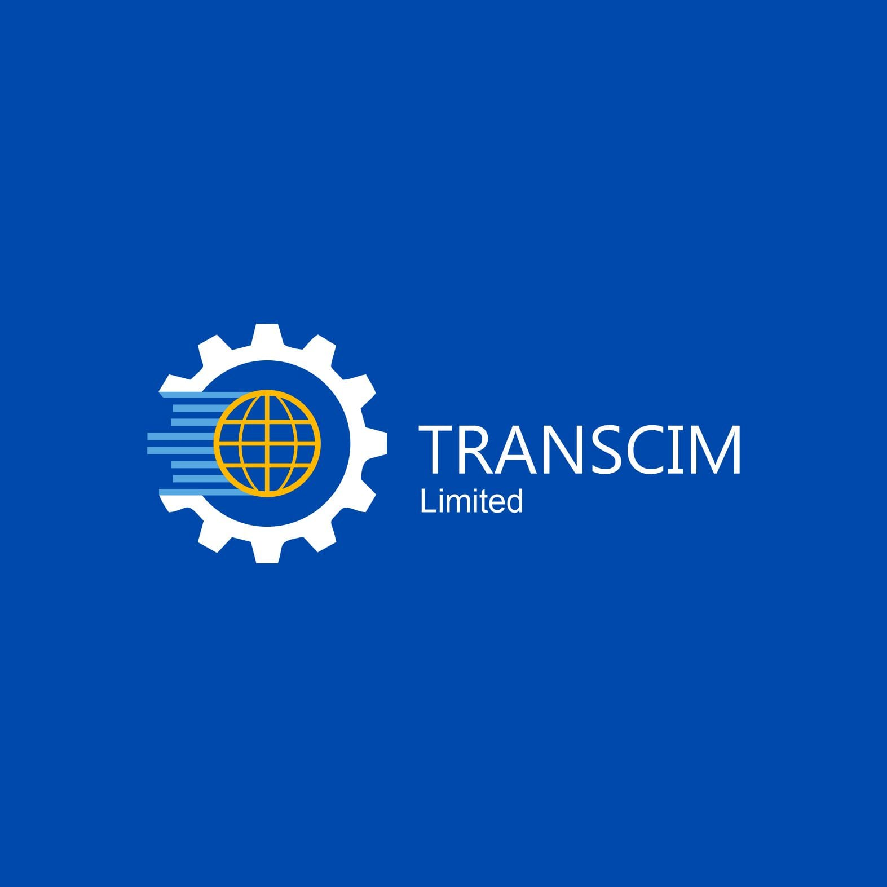
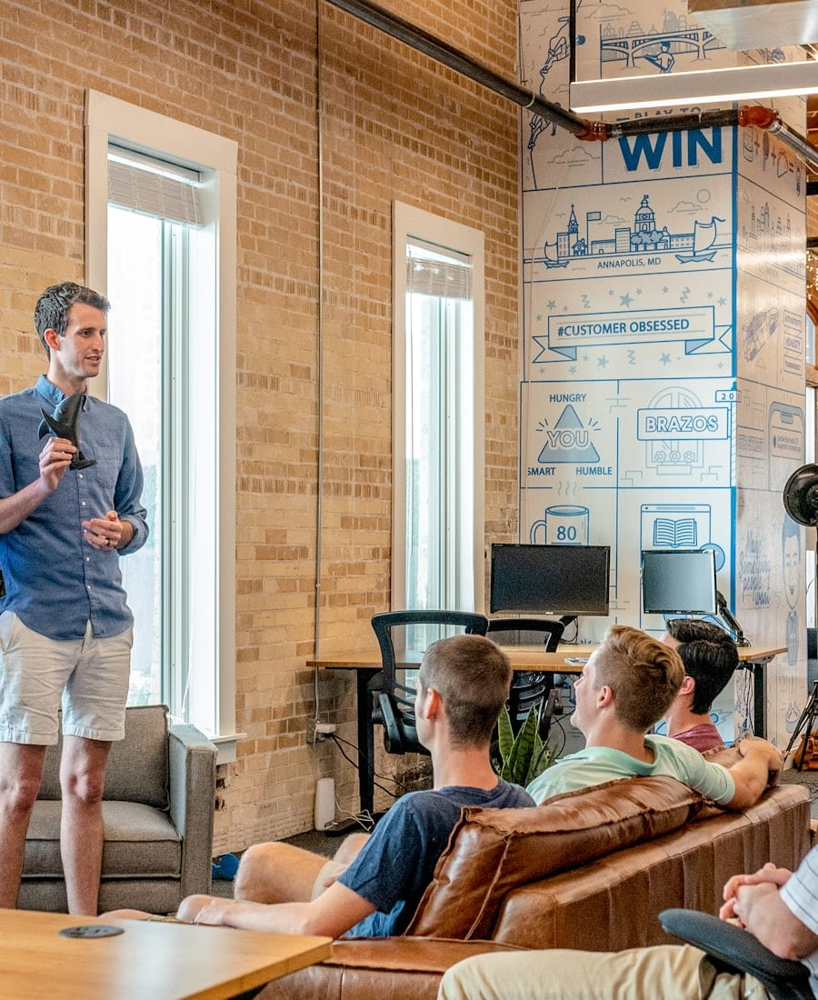

UI/UX Design & Development · 2026
Transcim
The website for a UK Microsoft consultancy — built to make deep Dynamics 365, Power Platform and Copilot Studio expertise read as clear, outcome-led and trustworthy.
I designed the UI/UX, then — as developer — used AI to transform the approved designs into the live site. I'm also on the team it introduces, as Head of AI & Copilot Studio.
Make Microsoft technology deliver real business outcomes.
TRANSCIM helps organisations get measurable results from Microsoft Dynamics 365, the Power Platform and Copilot Studio AI agents.
Overview
Most consultancy sites bury you in buzzwords. TRANSCIM's pitch is the opposite — go deep on a few Microsoft technologies, tie every engagement to a measurable outcome — and the site had to prove that in one scroll, before a busy buyer clicks away.
I designed the UI/UX for TRANSCIM's marketing site — a Milton Keynes consultancy specialising in Dynamics 365, the Power Platform and Copilot Studio AI — then, as developer, used AI to turn the approved designs into the working website. The brief: translate deep, certified Microsoft expertise into a clear, outcome-led story a buyer trusts in a single scroll — credentials, services, approach and team. I'm also on the team it introduces, as Head of AI & Copilot Studio.

The brand
Specialists across the Microsoft cloud.
A confident blue-and-gold identity, anchored by a gear-and-globe mark — positioning a small UK firm as a serious, certified Microsoft Solutions Partner.
What we do
Three specialisms, all about outcomes.
The site goes deep on a small number of Microsoft technologies — and ties each to a business result you can measure.
Dynamics 365
Implement, optimise and adopt Sales, Customer Service, Field Service, Finance and Supply Chain — so teams work from one trusted view of the customer.
Power Platform
The apps, automations and dashboards the business actually needs — Power Apps, Power Automate, Power BI and Power Pages — without long custom builds.
Copilot Studio AI
Design and deploy AI agents on Microsoft Copilot Studio that automate work and assist people — grounded in your own data and policies. My area on the team.
How we work
Outcome-led, not technology for its own sake.
Outcome first
Every engagement starts with the business result you need; technology choices flow from that.
Deep expertise
A narrow set of Microsoft technologies, gone deep — practitioners who have shipped what they recommend.
Honest scope
We'll say when something's the wrong fit. Trust is built on what we decline as much as what we deliver.
Adoption matters
A system nobody uses delivers nothing. We design for adoption from day one.
Discover
Start with the outcome. Workshops with the people closest to the problem, mapped to the systems and data you already have.
Design & Deliver
Design the smallest solution that hits the outcome, then ship it in iterations you can use immediately.
Adopt & Improve
Training, change support and measurement so the solution gets used — handed over fully documented.
Why Transcim
Practitioners, not PowerPoint consultants.
The messaging leans on one promise: every consultant has shipped what they recommend. The page backs it with proof, not adjectives.
- check_circleExperienced practitioners on every engagement — no offshore handoffs
- check_circleCurrent Microsoft certifications across the full business cloud
- check_circleOutcome-led pricing — you pay for results, not days
- check_circleUK-based, GDPR-aware, documented handover

Meet the team
Experienced Microsoft practitioners.
A small, deliberately experienced team — designed into the site as a credibility anchor. I'm one of the four.
Seun Kukoyi
Digital Transformation Consultant
Dabana Mohammed
Head of AI & Copilot Studio
James Whitfield
Power Platform Lead

Amara Okafor
Adoption & Change Director
Problem · Process · Craft
Make deep expertise legible in one scroll.
Microsoft consultancies all tend to sound the same. TRANSCIM's edge — going deep on a few technologies and tying every engagement to a measurable outcome — had to be obvious before a busy buyer clicks away.
Find the message
I distilled a sprawling capability set into one clear promise — real business outcomes — and the proof points that back it.
Architect the scroll
I sequenced the page — hero, credentials, services, approach, team — so trust compounds with every section.
Design the UI/UX
As UI/UX designer I designed the full responsive interface on the brand's blue-and-gold system, then got the designs approved.
Build it with AI
Then, as developer, I used AI to transform the approved designs into a proper, working website — including an embedded Copilot Studio agent that answers visitors' questions.
The result
A consultancy's expertise, made clickable.
The finished site turns deep Microsoft capability into a clear, outcome-led story — credentials, services, approach and team in one confident scroll, with a Copilot Studio AI agent answering questions right on the page. I designed it, then used AI to build it from the approved designs — for the consultancy where I'm Head of AI & Copilot Studio.